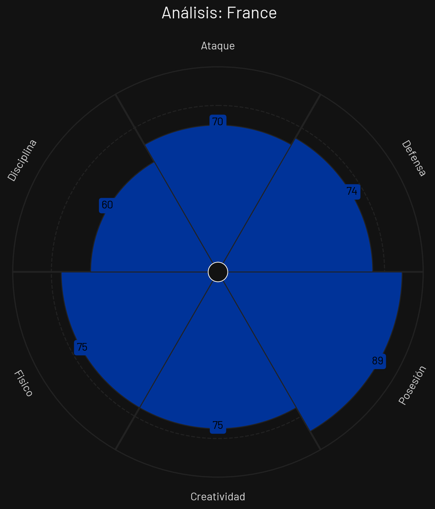
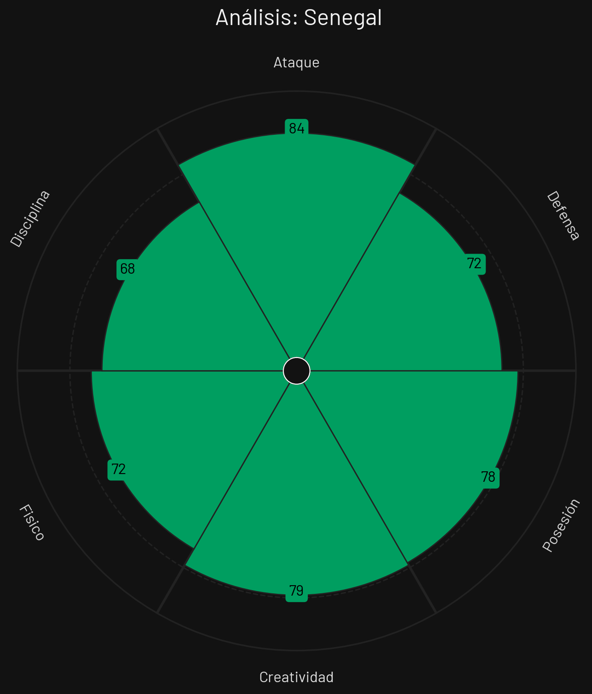
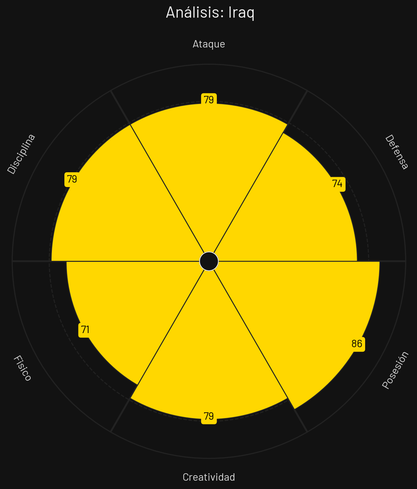

Francia

Estilo de Juego e Influencia
Transiciones ultra-rápidas letales por bandas, posesión paciente en gestación y pegada individual insuperable.
- Formación Base: 4-2-3-1
- xG Promedio: 2.28 por 90 min
- Zona de Presión: Bloque Medio-Alto (PPDA 8.9)
- Jugador Clave: Kylian Mbappé
Senegal

Estilo de Juego e Influencia
Potencia física y despliegue defensivo coordinado, superioridad numérica en bandas y rápida aceleración ofensiva.
- Formación Base: 4-3-3
- xG Promedio: 1.65 por 90 min
- Zona de Presión: Bloque Medio-Alto (PPDA 9.2)
- Jugador Clave: Sadio Mané
Noruega

Estilo de Juego e Influencia
Juego directo explotando las rupturas verticales de Haaland, centros potentes al área y presión física.
- Formación Base: 4-3-3
- xG Promedio: 1.50 por 90 min
- Zona de Presión: Bloque Medio (PPDA 10.0)
- Jugador Clave: Erling Haaland
Irak

Estilo de Juego e Influencia
Bloque defensivo cerrado, marcas de cobertura estricta y salidas en largo buscando disputar el balón.
- Formación Base: 4-2-3-1
- xG Promedio: 1.05 por 90 min
- Zona de Presión: Bloque Bajo (PPDA 12.2)
- Jugador Clave: Aymen Hussein
Análisis Técnico: Grupo I - Mundial 2026
Basándome en los perfiles tácticos proporcionados, presento un análisis técnico detallado de los equipos del Grupo I:
📊 Comparativa General de Atributos
| Atributo | ||||
|---|---|---|---|---|
| Ataque | 70 | 84 | 97 | 79 |
| Defensa | 74 | 72 | 82 | 74 |
| Posesión | 89 | 78 | 78 | 86 |
| Creatividad | 75 | 79 | 81 | 79 |
| Físico | 75 | 72 | 81 | 71 |
| Disciplina | 60 | 68 | 82 | 79 |
🔍 Análisis por Equipo
FRANCIA
Fortalezas
- Velocidad con Mbappé (90): El contraataque más letal del planeta.
- Pegada Individual (87): Goles de alta dificultad técnica.
- Sólida Estructura (84): Doble pivote defensivo de contención.
Debilidades
- Presión Pasiva (76): Ocasionalmente ceden terreno al oponente sin presionar.
Estrategia: Atracción en bloque medio, salida directa con balones largos al espacio y combinaciones rápidas por fuera.
SENEGAL
Fortalezas
- Potencia Física (85): Dominio en duelos y choques de intensidad.
- Dinamismo por Banda (81): Extremos veloces en 1v1.
- Defensa Coordinada (80): Línea de 4 muy experimentada.
Debilidades
- Ataque contra Bloque Bajo (72): Falta de fluidez creativa sin espacios.
Estrategia: Presión en bloque medio, forzar la pérdida y explotar la velocidad exterior para desbordar.
NORUEGA
Fortalezas
- Definición de Haaland (88): Letalidad absoluta en el área.
- Centros al Área (78): Buenos lanzadores por las bandas.
- Ataque de Ruptura (77): Desmarques profundos de Haaland.
Debilidades
- Estructura Defensiva (70): Facilidad para encajar goles si superan su mediocampo.
Estrategia: Presión alta selectiva, envíos verticales rápidos al área buscando la zancada de Haaland y centros rasos.
IRAK
Fortalezas
- Combate Físico (79): Gran entrega en duelos de marca.
- Fuerza Aérea (77): Peligrosos en segundas jugadas.
- Compromiso Defensivo (76): Mucha gente detrás de la línea de la pelota.
Debilidades
- Velocidad de Giro (64): Defensores lentos frente a desmarques ágiles.
- Pocas Variantes Ofensivas (61): Poca generación de juego.
Estrategia: Esperar replegados en 4-5-1, evitar tiros directos y buscar faltas tácticas para cortar contragolpes.
⚔️ Matchups Clave
🏆 Proyección del Grupo
Clasificación Esperada:
🧠 Análisis Táctico Avanzado
A continuación, se presenta un análisis técnico y cuantitativo del **Grupo I** para el Mundial de Fútbol 2026, evaluando las virtudes, debilidades y el enfoque estratégico de cada selección a partir de sus perfiles estadísticos.
🔍 Análisis Perfil por Perfil
1. Noruega
Al examinar el archivo `PerfilTacticoNoruega.png`, la escuadra escandinava se consolida como el rival más fuerte y el gigante estadístico indiscutible de este sector, liderando casi todas las facetas del juego.
- Fortaleza principal: Un potencial ofensivo devastador e inigualable (97 en Ataque), respaldado por un equilibrio perfecto de solidez en su propia área (82 en Defensa) y un comportamiento ético impecable (82 en Disciplina). Es un equipo de altísimo nivel competitivo.
- Área de mejora: Su menor registro (aunque sigue siendo notable) es la Posesión (78), lo que delata una preferencia por transiciones muy verticales y un ataque directo para capitalizar su contundencia antes que posesiones excesivamente lentas.
2. Senegal
De acuerdo con los datos del archivo `PerfilTacticoSenegal.png`, el combinado africano presenta un perfil marcadamente agresivo y punzante en la última línea.
- Fortaleza principal: Su efectividad e impacto en el último tercio (84 en Ataque), muy bien complementado por una fluidez constructiva respetable (79 en Creatividad) y buena gestión del esférico (78 en Posesión).
- Área de mejora: El control emocional y las transiciones defensivas. Su baja puntuación en Disciplina (68) combinada con una Defensa regular (72) sugiere un equipo propenso a desordenarse o cometer faltas tácticas ante ataques rápidos del rival.
3. Francia
El desglose del archivo `PerfilTacticoFrancia.png` revela a "Les Bleus" con una propuesta táctica orientada casi exclusivamente al control absoluto de los hilos del encuentro mediante la tenencia.
- Fortaleza principal: Un dominio total del ritmo de juego a través de la circulación del esférico (89 en Posesión), complementado por niveles equilibrados en el apartado físico y generativo (75 tanto en Físico como en Creatividad).
- Área de mejora: La falta de contundencia y un serio problema de orden. Sorprende un escaso 70 en Ataque y una alarmante falta de Disciplina (60, la más baja del grupo), lo que expone a un equipo que puede volverse predecible con el balón y frustrarse tácticamente con facilidad.
4. Irak
Al analizar el archivo `PerfilTacticoIrak.png`, el conjunto asiático se planta en la cita mundialista como una grata sorpresa competitiva, mostrando un balance colectivo muy aseado.
- Fortaleza principal: Su gran capacidad para monopolizar y asegurar el balón (86 en Posesión) respaldada por un sólido sentido del orden y juego limpio (79 en Disciplina), igualando a Senegal en el volumen creativo (79).
- Área de mejora: El fondo atlético y los duelos directos. Su registro más bajo se sitúa en el apartado Físico (71), lo que podría pasarles factura en las segundas jugadas o ante ritmos de ida y vuelta extenuantes.
⚡ Dinámica Táctica del Grupo
La configuración del Grupo I vaticina una batalla encarnizada por la iniciativa y el espacio: